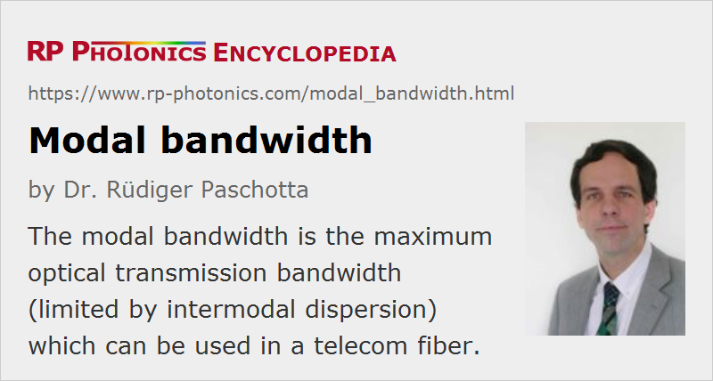

Modal Bandwidth
Definition: the maximum optical bandwidth (limited by intermodal dispersion) which can be used in a telecom fiber
Categories: fiber optics and waveguides, lightwave communications, light pulses
How to cite the article; suggest additional literature
Author: Dr. Rüdiger Paschotta
The bandwidth of a telecom fiber is understood to be the maximum bandwidth of signals which can be transmitted through the fiber without obtaining strong signal degradations. In case of multimode fibers, that bandwidth is usually limited by intermodal dispersion. In such cases, it is called the modal bandwidth. As that bandwidth is often inversely proportional to the used length of fiber, it is common to specifies the bandwidth–distance product. Note, however, that the modal properties of the fiber can in principle change along the length, so that the modal bandwidth may not be inversely proportional to the fiber length.
The modal bandwidth is often determined based on time-domain measurements. Essentially, one measures the temporal response of the system (output power vs. time) when ultrashort pulses are launched into the fiber. The result can substantially depend on the launch conditions, because these determine the distribution of optical power over the fiber modes, which generally have different group velocities. Therefore, the modal bandwidth is not a property of the fiber alone. Different ways have been developed for handling that problem. It is common to measure the differential mode delay (DMD) for variable launch conditions, but different methods are used to derive a modal bandwidth from the results:
- A traditional method is the overfill launch method (OFL method), where one tries to spread the input light relatively smoothly over all guided modes of the fiber. Such launch conditions, however, are usually not representative for systems using VCSELs; therefore, the resulting “overfilled modal bandwidth” is not a good measure for the actual performance to be expected from a VCSEL-based system.
- The “DMD mask” method compares DMD test results against a set of specifications (called templates or masks) for determining whether or not the modal dispersion is weak enough for given transmission conditions.
- Another approach is to define a calculated minimum effective modal bandwidth (EMBc) as a kind of worst-case result for a defined set of operation conditions.
There have been arguments between fiber manufacturers about what kind of detailed specification is most practical and reliable for estimating or guaranteeing the performance of fiber-optic links. Such arguments are often brought forward with somewhat unclear technical details, apparently trying to gain advantages for the marketing from the created impression concerning the reliability of different transmission fibers.
Questions and Comments from Users
Here you can submit questions and comments. As far as they get accepted by the author, they will appear above this paragraph together with the author’s answer. The author will decide on acceptance based on certain criteria. Essentially, the issue must be of sufficiently broad interest.
Please do not enter personal data here; we would otherwise delete it soon. (See also our privacy declaration.) If you wish to receive personal feedback or consultancy from the author, please contact him e.g. via e-mail.
By submitting the information, you give your consent to the potential publication of your inputs on our website according to our rules. (If you later retract your consent, we will delete those inputs.) As your inputs are first reviewed by the author, they may be published with some delay.
See also: intermodal dispersion, differential mode delay, bandwidth, telecom fibers
and other articles in the categories fiber optics and waveguides, lightwave communications, light pulses
|  |
If you like this page, please share the link with your friends and colleagues, e.g. via social media:
These sharing buttons are implemented in a privacy-friendly way!